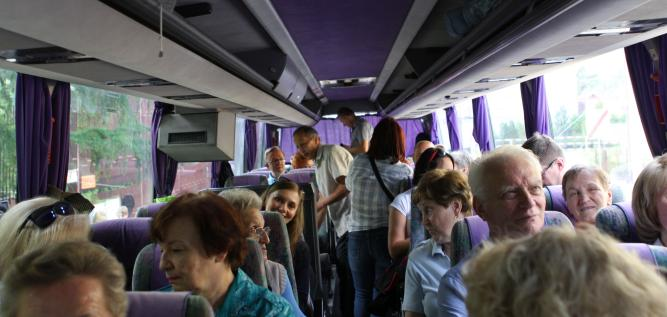
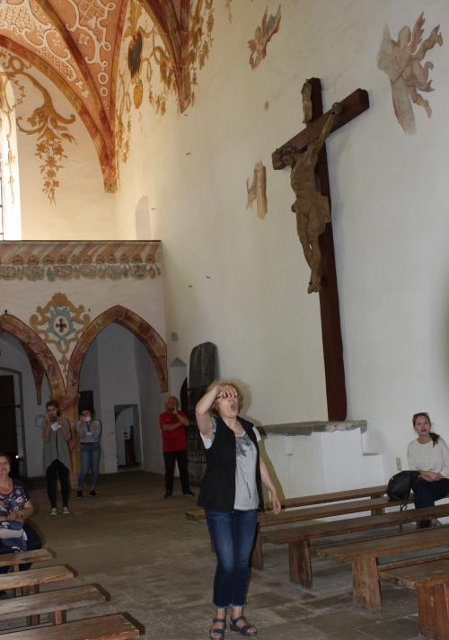
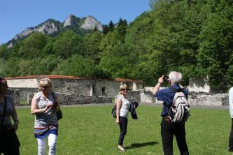

do aktualności
do aktualności2018-05-12i13
Sobota
8 rano! Wyjeżdżamy na majówkę. Wszyscy radośni, humory dopisują.

Niedzica, jesteśmy na miejscu. Piękne widoki i piękna pogoda. Teraz pamiątkowe zdjęcie
Ale nie koniec, bo jeszcze ja i jeszcze ja….
I jeszcze, tylko fotografa brak :)
Idziemy na zaporę wodną na Dunajcu. Oprowadza nas Leszek, mąż naszej chórzystki.
Mamy też jaskółki :), no cóż nad wodospadem tylko latać.
Koniec pozowania, schodzimy „pod ziemię”. Dzisiaj mamy okazję zwiedzić zaporę od wewnątrz.
Po zaporze, kolej na elektrownię. Zwiedzamy Elektrownię Wodną Niedzica.
Koniec zwiedzania, teraz relaks. Tym oto statkiem (i z tymi facetami) wyruszamy w rejs po jeziorze.
Na łodzi wspaniały poczęstunek od właściciela, ale nic za darmo… co się zjadło trzeba odśpiewać, więc zaczynamy.
I fotka z Harnasiem
Koniec pięknej wycieczki, schodzimy na ląd i jedziemy do Bacówki po oscypki. Wszyscy po oscypki a ja do pięknych kóz.
Po zakupach i obiedzie jedziemy na spotkanie z chórem „Echo Gorczańskie” na „Posiady Góralskie”. No i się zaczęło, co tu pisać, spotkały się dwa chóry a do tego jeszcze się lubią, więc popatrzcie.
No cóż, co fajne szybko się kończy. Musimy wracać do hotelu, bo kończy się czas pracy naszego kierowcy, co nie oznacza koniec zabawy. Przenosimy się do hotelu, tu śpiewamy i bawimy się dalej.
I tak zakończyliśmy pierwszy dzień majówki.
Niedziela
Wstajemy raźnie, śniadanie i zbieramy się do wyjazdu.
Oprawiamy muzycznie Mszę Św. w kościele w Niedzicy. Śpiewamy z chóru a tam bardzo mało miejsca.
Przebrani i gotowi idziemy na wycieczkę.
Idziemy na Słowację zwiedzać Muzeum „Cerveny Klastor”. Jesteśmy chórem, więc zaczynamy od śpiewu.
A teraz idziemy zwiedzać.
Tutaj wspaniała akustyka, więc… śpiewamy.

Zwiedzamy dalej.

Wychodząc z klasztoru znaleźliśmy porzuconego niedźwiedzia.
Ponieważ nie chciał z nami jechać, pojechaliśmy bez misia. I tak zakończyła się nasza majówka.
do aktualności

 Prowadzenie strony oraz zdjęcia: Małgorzata Wysocka-Cebula
Prowadzenie strony oraz zdjęcia: Małgorzata Wysocka-Cebula